Dimamid is a music project built on one simple practice: paying attention. The songs sit between folk and ambient, rave and reflection — small, patient, full of questions that don't need answers. Always wondering why things must change is less a lyric than the orbit the whole catalogue moves around.